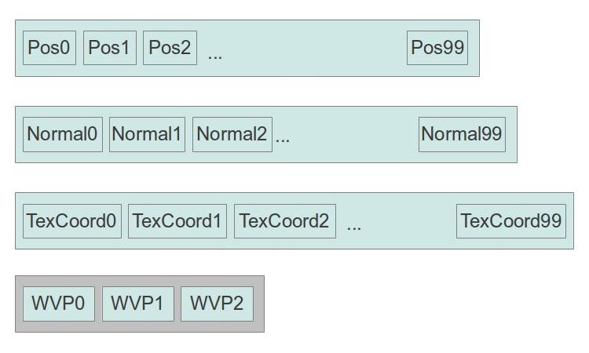

Background
Imagine that you want to render a scene where a huge army is moving across the land. You have a model of a soldier and you want to render a few thousand soldiers. One way to do it is to dispatch as many draw calls as there are soldiers while changing relevant uniform variables in between. For example, each soldier is located in a different spot, each soldier can be up to 10% taller or shorter than the average, etc. Therefore, we must update the WVP matrix between draw calls as well as any other variable which is pertinent to the specific soldier. This scheme can have a large overhead. There has to be a better way.
Enter instanced rendering. An Instance is a single occurence of the model that you want to render (in our case, a soldier). Instanced rendering means that we can render multiple instances in a single draw call and provide each instance with some unique attributes. We are going to cover two methods for doing that.
In the first method instance specific attributes (e.g. WVP matrix) go into a seperate vertex buffer. Usually the vertex processor makes one step inside the VBs for each vertex. In the case of VBs with instance data that step occurs only after all the "regular" vertices have already been drawn. VBs with instance data simply provide attributes that are common to all the vertices. Consider the following example:
What we have here is a model that contains 100 vertices. Each vertex has a position, normal and texture coordinates. Each of these three data items has its own vertex buffer. In addition, we have a fourth vertex buffer that contains three WVP matrices. The plan is to draw the 100 vertices while applying the first WVP matrix on each of their positions, then draw them again using the second WVP matrix and then with the third matrix. We will do this in one draw call instead of three. The WVP matrix will go into an input variable of the vertex but since the fourth VB is marked as having instance data the matrix will not change until all the vertices have been drawn.
The second method uses a built-in shader variable called gl_InstanceID which, not suprisingly, tells us the current instance index. We can use this index to locate instance specific data in uniform variable arrays.
Source walkthru
(mesh.h:50)
class Mesh
{
public:
...
void Render(unsigned int NumInstances, const Matrix4f* WVPMats, const Matrix4f* WorldMats);
...
private:
...
#define INDEX_BUFFER 0
#define POS_VB 1
#define NORMAL_VB 2
#define TEXCOORD_VB 3
#define WVP_MAT_VB 4
#define WORLD_MAT_VB 5
GLuint m_VAO;
GLuint m_Buffers[6];
...
These are the changes to the Mesh class. The Render() function now takes two arrays that contain the WVP and world matrices for all the instances and NumInstances is the number of matrices in each array. We also added two VBs to store them.
(mesh.cpp:91)
bool Mesh::InitFromScene(const aiScene* pScene, const string& Filename)
{
...
// Generate and populate the buffers with vertex attributes and the indices
glBindBuffer(GL_ARRAY_BUFFER, m_Buffers[POS_VB]);
glBufferData(GL_ARRAY_BUFFER, sizeof(Positions[0]) * Positions.size(), &Positions[0],
GL_STATIC_DRAW);
glEnableVertexAttribArray(POSITION_LOCATION);
glVertexAttribPointer(POSITION_LOCATION, 3, GL_FLOAT, GL_FALSE, 0, 0);
glBindBuffer(GL_ARRAY_BUFFER, m_Buffers[TEXCOORD_VB]);
glBufferData(GL_ARRAY_BUFFER, sizeof(TexCoords[0]) * TexCoords.size(), &TexCoords[0],
GL_STATIC_DRAW);
glEnableVertexAttribArray(TEX_COORD_LOCATION);
glVertexAttribPointer(TEX_COORD_LOCATION, 2, GL_FLOAT, GL_FALSE, 0, 0);
glBindBuffer(GL_ARRAY_BUFFER, m_Buffers[NORMAL_VB]);
glBufferData(GL_ARRAY_BUFFER, sizeof(Normals[0]) * Normals.size(), &Normals[0],
GL_STATIC_DRAW);
glEnableVertexAttribArray(NORMAL_LOCATION);
glVertexAttribPointer(NORMAL_LOCATION, 3, GL_FLOAT, GL_FALSE, 0, 0);
glBindBuffer(GL_ELEMENT_ARRAY_BUFFER, m_Buffers[INDEX_BUFFER]);
glBufferData(GL_ELEMENT_ARRAY_BUFFER, sizeof(Indices[0]) * Indices.size(), &Indices[0],
GL_STATIC_DRAW);
glBindBuffer(GL_ARRAY_BUFFER, m_Buffers[WVP_MAT_VB]);
for (unsigned int i = 0; i < 4 ; i++) {
glEnableVertexAttribArray(WVP_LOCATION + i);
glVertexAttribPointer(WVP_LOCATION + i, 4, GL_FLOAT, GL_FALSE, sizeof(Matrix4f),
(const GLvoid*)(sizeof(GLfloat) * i * 4));
glVertexAttribDivisor(WVP_LOCATION + i, 1);
}
glBindBuffer(GL_ARRAY_BUFFER, m_Buffers[WORLD_MAT_VB]);
for (unsigned int i = 0; i < 4 ; i++) {
glEnableVertexAttribArray(WORLD_LOCATION + i);
glVertexAttribPointer(WORLD_LOCATION + i, 4, GL_FLOAT, GL_FALSE, sizeof(Matrix4f),
(const GLvoid*)(sizeof(GLfloat) * i * 4));
glVertexAttribDivisor(WORLD_LOCATION + i, 1);
}
return GLCheckError();
}
The above code creates and populates the various VBs of the mesh with the vertex data. The bold part has been added and shows how to make VBs contain instance data. We start by binding the buffer of the WVP matrices as usual. Since a WVP matrix is a 4x4 matrix and we plan to provide it as an input variable to the VS we cannot enable just one vertex attribute for it because a vertex attribute can contain no more than 4 floating points or integers. Therefore, we have a loop which enables and configures 4 consecutive vertex attributes. Each attribute will contain one vector from the matrix. Next we configure the attributes. Each of the four attributes is made up of four floating points and the distance between an attribute in one matrix and the next is exactly the size of a 4x4 matrix. In addition, we don't want OpenGL to normalize the input for us. This explains parameters 2-5 in the function glVertexAttribPointer(). The last parameter is simply the offset of the attribute inside one instance data. The first vector goes to offset 0, the second to 16, etc.
The function glVertexAttribDivisor() is what makes this an instance data rather than vertex data. It takes two parameters - the first one is the vertex array attribute and the second tells OpenGL the rate by which the attribute advances during instanced rendering. It basically means the number of times the entire set of vertices is rendered before the attribute is updated from the buffer. By default, the divisor is zero. This causes regular vertex attributes to be updated from vertex to vertex. If the divisor is 10 it means that the first 10 instances will use the first piece of data from the buffer, the next 10 instances will use the second, etc. We want to have a dedicated WVP matrix for each instance so we use a divisor of 1.
We repeat these steps for all four vertex array attributes of the matrix. We then do the same with the world matrix. Note that unlike the other vertex attributes such as the position and the normal we don't upload any data into the buffers. The reason is that the WVP and world matrices are dynamic and will be updated every frame. So we just set things up for later and leave the buffers uninitialized for now.
(mesh.cpp:253)
void Mesh::Render(unsigned int NumInstances, const Matrix4f* WVPMats, const Matrix4f* WorldMats)
{
glBindBuffer(GL_ARRAY_BUFFER, m_Buffers[WVP_MAT_VB]);
glBufferData(GL_ARRAY_BUFFER, sizeof(Matrix4f) * NumInstances, WVPMats, GL_DYNAMIC_DRAW);
glBindBuffer(GL_ARRAY_BUFFER, m_Buffers[WORLD_MAT_VB]);
glBufferData(GL_ARRAY_BUFFER, sizeof(Matrix4f) * NumInstances, WorldMats, GL_DYNAMIC_DRAW);
glBindVertexArray(m_VAO);
for (unsigned int i = 0 ; i < m_Entries.size() ; i++) {
const unsigned int MaterialIndex = m_Entries[i].MaterialIndex;
assert(MaterialIndex < m_Textures.size());
if (m_Textures[MaterialIndex]) {
m_Textures[MaterialIndex]->Bind(GL_TEXTURE0);
}
glDrawElementsInstancedBaseVertex(GL_TRIANGLES,
m_Entries[i].NumIndices,
GL_UNSIGNED_INT,
(void*)(sizeof(unsigned int) * m_Entries[i].BaseIndex),
NumInstances,
m_Entries[i].BaseVertex);
}
// Make sure the VAO is not changed from the outside
glBindVertexArray(0);
}
This is the updated Render() function of the Mesh class. It now takes two arrays of matrices - the WVP matrix and the world transformation matrix (NumInstances is the size of both arrays). Before we bind our VAO (check out the previous tutorial if you don't know what VAOs are) we bind and upload the matrices into their corresponding vertex buffers. We call glDrawElementsInstancedBaseVertex instead of glDrawElementsBaseVertex. The only change in this function is that it takes the number of instances as the fifth parameter. This means that the same indices (according to the other parameters) will be drawn again and again - NumInstances times altogether. The OpenGL will fetch new data for each vertex from the VBs whose divisor is 0 (the old ones). It will fetch new data from the VBs whose divisor is 1 only after a full instance has been rendered. The general algorithm of this draw call is as follows:
- for (i = 0 ; i < NumInstances ; i++)
- if (i mod divisor == 0)
- fetch attribute i/divisor from VBs with instance data
- for (j = 0 ; j < NumVertices ; j++)
- fetch attribute j from VBs with vertex data
(lightning_technique.cpp:25)
#version 330
layout (location = 0) in vec3 Position;
layout (location = 1) in vec2 TexCoord;
layout (location = 2) in vec3 Normal;
layout (location = 3) in mat4 WVP;
layout (location = 7) in mat4 World;
out vec2 TexCoord0;
out vec3 Normal0;
out vec3 WorldPos0;
flat out int InstanceID;
void main()
{
gl_Position = WVP * vec4(Position, 1.0);
TexCoord0 = TexCoord;
Normal0 = World * vec4(Normal, 0.0)).xyz;
WorldPos0 = World * vec4(Position, 1.0)).xyz;
InstanceID = gl_InstanceID;
};
This is the updated VS. Instead of getting the WVP and world matrics as uniform variables they are now coming in as regular vertex attributes. The VS doesn't care that their values will only be updated once per instance and not per vertex. As discussed above, the WVP matrix takes up locations 3-6 and the world matrix takes up locations 7-10.
The last line of the VS is where we see the second way of doing instanced rendering (the first being passing instance data as vertex attributes). 'gl_InstanceID' is a built-in variable which is available only in the VS. Since we plan to use it in the FS we have to access it here and pass it along in a regular output variable. The type of gl_InstanceID is an integer so we use an output variable of the same type. Since integers cannot be interpolated by the rasterizer we have to mark the output variable as 'flat' (forgetting to do that will trigger a compiler error).
flat in int InstanceID;
...
uniform vec4 gColor[4];
...
void main()
{
vec3 Normal = normalize(Normal0);
vec4 TotalLight = CalcDirectionalLight(Normal);
for (int i = 0 ; i < gNumPointLights ; i++) {
TotalLight += CalcPointLight(gPointLights[i], Normal);
}
for (int i = 0 ; i < gNumSpotLights ; i++) {
TotalLight += CalcSpotLight(gSpotLights[i], Normal);
}
FragColor = texture(gColorMap, TexCoord0.xy) * TotalLight * gColor[InstanceID % 4];
};
To show off the use of gl_InstanceID I've added a uniform array of 4 floating point vectors to the FS. The FS gets the instance ID from the VS and uses the modulo operation to index into the array. The color that was calculated by the lighting equation is multiplied by one of the colors from the array. By placing different colors in the array we are able to get some interesting coloring of the instances.
(tutorial33.cpp:141)
Pipeline p;
p.SetCamera(m_pGameCamera->GetPos(), m_pGameCamera->GetTarget(), m_pGameCamera->GetUp());
p.SetPerspectiveProj(m_persProjInfo);
p.Rotate(0.0f, 90.0f, 0.0f);
p.Scale(0.005f, 0.005f, 0.005f);
Matrix4f WVPMatrics[NUM_INSTANCES];
Matrix4f WorldMatrices[NUM_INSTANCES];
for (unsigned int i = 0 ; i < NUM_INSTANCES ; i++) {
Vector3f Pos(m_positions[i]);
Pos.y += sinf(m_scale) * m_velocity[i];
p.WorldPos(Pos);
WVPMatrics[i] = p.GetWVPTrans().Transpose();
WorldMatrices[i] = p.GetWorldTrans().Transpose();
}
m_pMesh->Render(NUM_INSTANCES, WVPMatrics, WorldMatrices);
The above piece of code is taken from the main render loop and shows how to call the updated Mesh::Render() function. We create a Pipeline object and set all the common stuff into it. The only thing that changes from instance to instance is the world position so we leave it for the loop to handle. We prepare two arrays for the WVP and world matrices. Now we loop over all the instances and fetch their starting position from the m_positions array (which was initialized with random values during startup). We calculate the current position and set it into the Pipeline object. We can now get the WVP and world matrix from the Pipeline object and place them in their proper places in the arrays. But before we do that we have to do something really important which can cause quite a lot of headache for people at first. We have to transpose the matrices.
The thing is that our Matrix class stores its 16 floating point values as a single line in memory. We start at the top left corner of the standard matrix and work our way to the right. When we reach the end we drop to the next row. So basically we travel row by row until we reach the bottom right. You can say that we have four 4-row-vectors one after the other. Each of these row vectors goes into its own vertex input attribute (e.g. the top row vector of the WVP matrix goes to vertex attribute 3, the second goes to attribute 4, the third to attribute 5 and the bottom row vector goes to attribute 6 - this is according to how we setup our VS). On the shader side we declare the WVP and world matrices as having the 'mat4' type. The way that mat4 types variable are initialized by vertex attributes is that each vertex attribute goes into a column-vector in the matrix. For example, in the case of our WVP matrix OpenGL implicitly calls the mat4 constructor like that: mat4 WVP(attribute 3, attribute 4, attribute 5, attribute 6). Attribute 3 becomes the first column from the left, attribute 4 is the second column, etc. This effectively transposes our matrix because each row becomes a column. In order to counter this behavior and keep our matrix correct we transpose it before we load it into the array (code above in bold face).
Notes
If you compile and run this tutorial demo you will notice the FPS (frames per second) counter at the bottom left corner of the window. OpenGL doesn't have a standard library to do font rendering so different people use different methods. I recently discovered freetype-gl by Nicolas Rougier and I really like it. It is available for free under the new BSD license. I've modified the sources a bit to make it simpler to use and included them as part of the demo so you don't need to install anything. If you're interested in the way it is used in the demo just follow 'FontRenderer' in tutorial33.cpp.